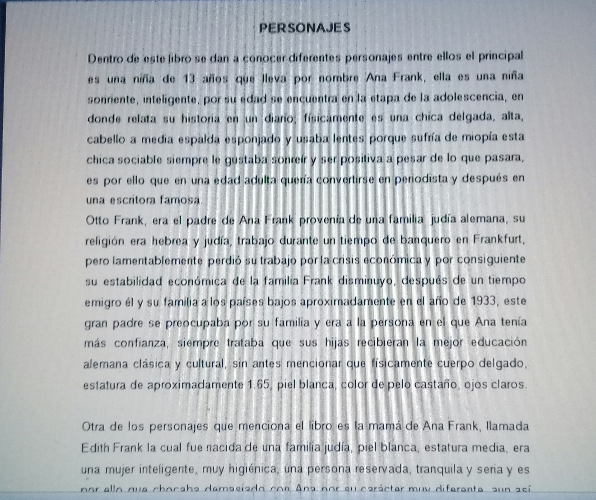
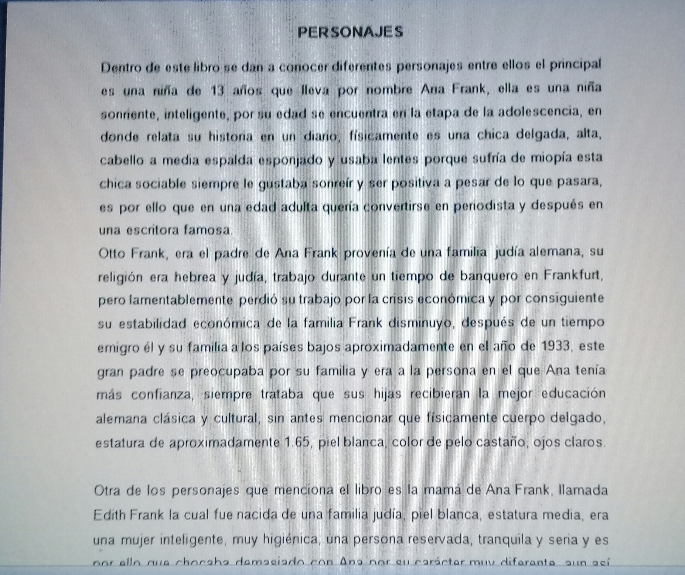

lectura de comprension
En esta practica realizamos una lectura de comprension de un libro yo lei el libro titulado EL DIARIO DE ANA FRANK
en este me pude dar cuenta muchos sucesos que esta nina paso, y tambien dentro de esta
lectura me ayudo para que tuviera un mejor
lexico en mi vida cotidiana,
al realizar la lectura, lo siguiente fue obtener palabras desconocidas, hechos relevantes y
la descripcion de los personajes dentro de la obra literaria.
 

Lesly Abigail Torres Ramirez 6101